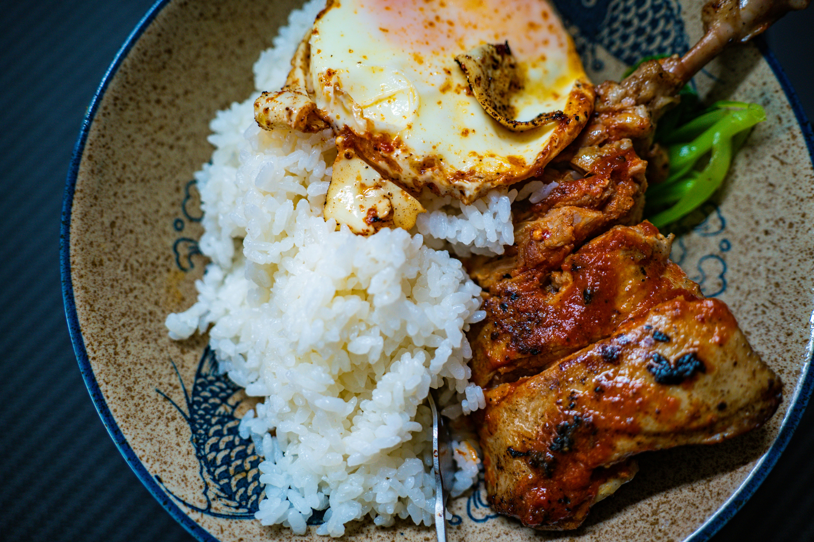

Rice and chicken is my favorite dish because it is delicious and easy to make. My mom makes a lot of rice and chicken and that meal reminds me of home.
| Ingredient | Quantity |
|---|---|
| Rice | 2 cups |
| Chicken | 1 lb |
| Vegetables | 1 cup |
| Spices | To taste |

My mom makes a lot of chicken parmesan and that meal reminds me of home. It is my comfort Dish
| Ingredient | Quantity |
|---|---|
| Chicken breasts | 4 |
| Breadcrumbs | 1 cup |
| Marinara sauce | 1 cup |
| Mozzarella cheese | 1 cup |